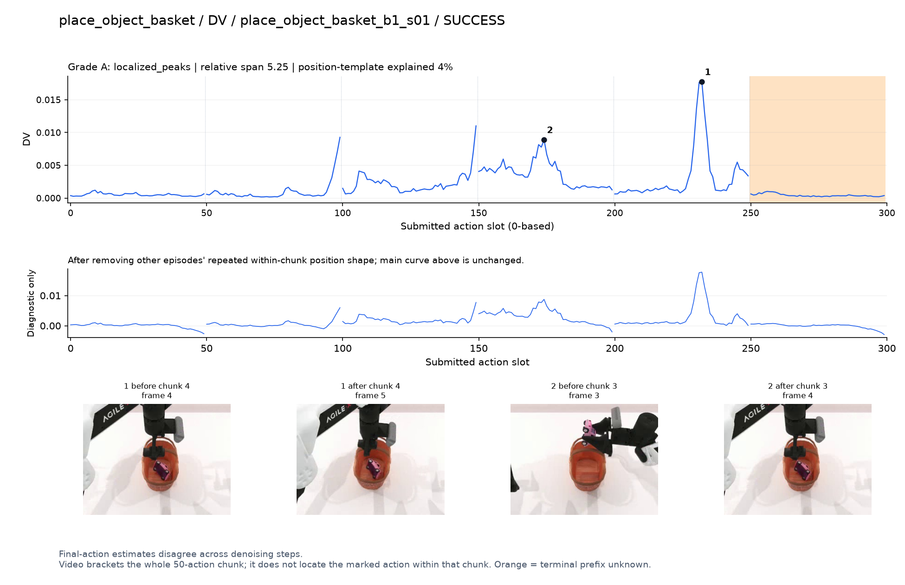
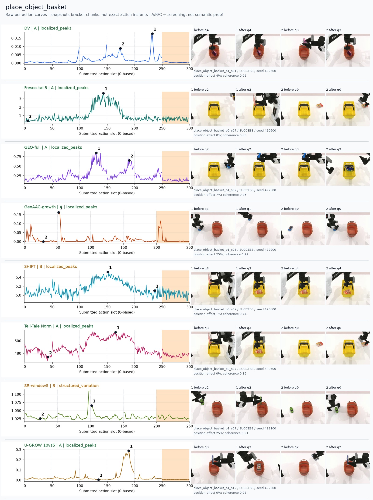
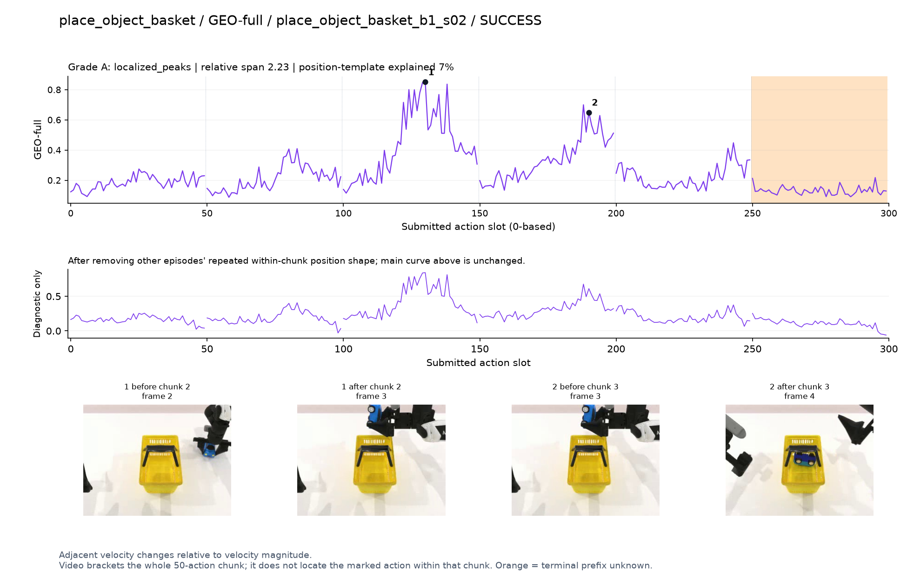
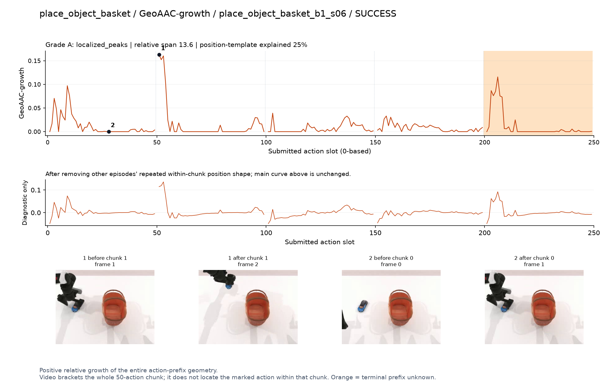
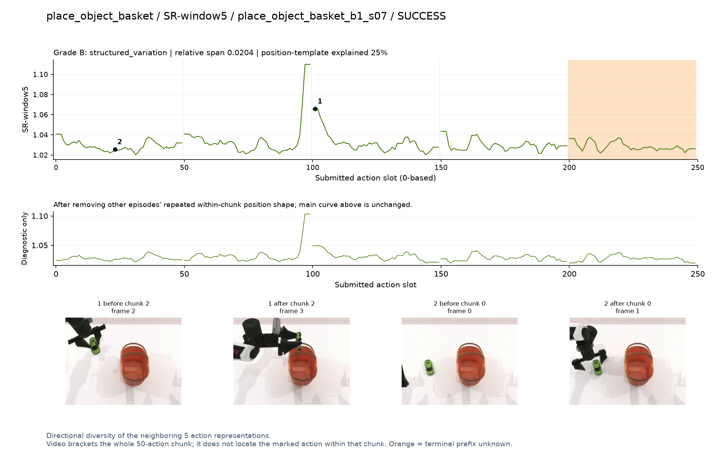
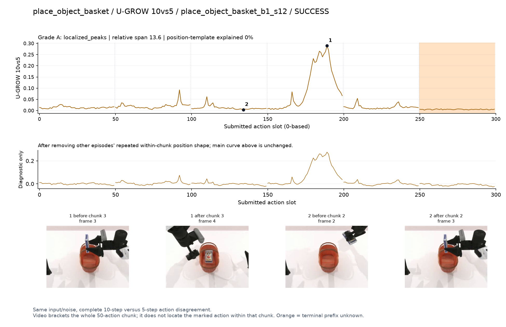

DV · A · localized_peaks
Final-action estimates disagree across denoising steps.
SVG · metadata
Only pre/post chunk frames were recorded. A visible stage transition is a candidate explanation, not proof of a contact instant. Main plots preserve every action score.
人工看图复核：dv [candidate] 候选：q3入篮和q4篮内调整有高区。
fresco [confounded] 阶段候选但混杂强：q2/q3存在清楚宽峰，和物体入篮同时发生，仍主要测路径长度。
geo [candidate] 候选：q2持物到篮口、q3放入篮内各有峰。
geoaac [confounded] 谨慎：q1提物的前缀开头孤立峰，未直接指向入篮。
shift [confounded] 阶段候选但混杂强：与Fresco同轨迹入篮时宽高区，不足以证明是语义难度。
norm [candidate] 优先阶段候选：q2/q3持物越过篮口并放入时宽高区，之后回落。
sr [confounded] 谨慎：q2接近篮口的高值主要在chunk开头。
ugrow [candidate] 候选：q3物体由篮口上方落入篮内时明显高区。

Final-action estimates disagree across denoising steps.
SVG · metadata
Intermediate action drafts vary across the final five steps.
SVG · metadata
Adjacent velocity changes relative to velocity magnitude.
SVG · metadata
Positive relative growth of the entire action-prefix geometry.
SVG · metadata
First/last denoising representations change after layer averaging.
SVG · metadata
Residual-vector magnitude; last 5 evaluations, deepest 3 layers.
SVG · metadata
Directional diversity of the neighboring 5 action representations.
SVG · metadata
Same input/noise, complete 10-step versus 5-step action disagreement.
SVG · metadata